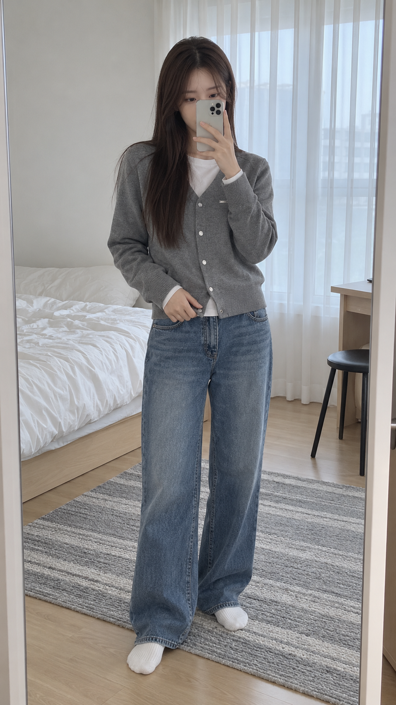
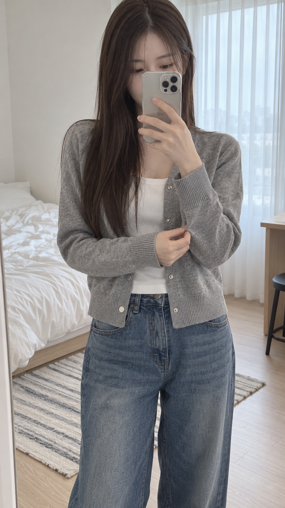
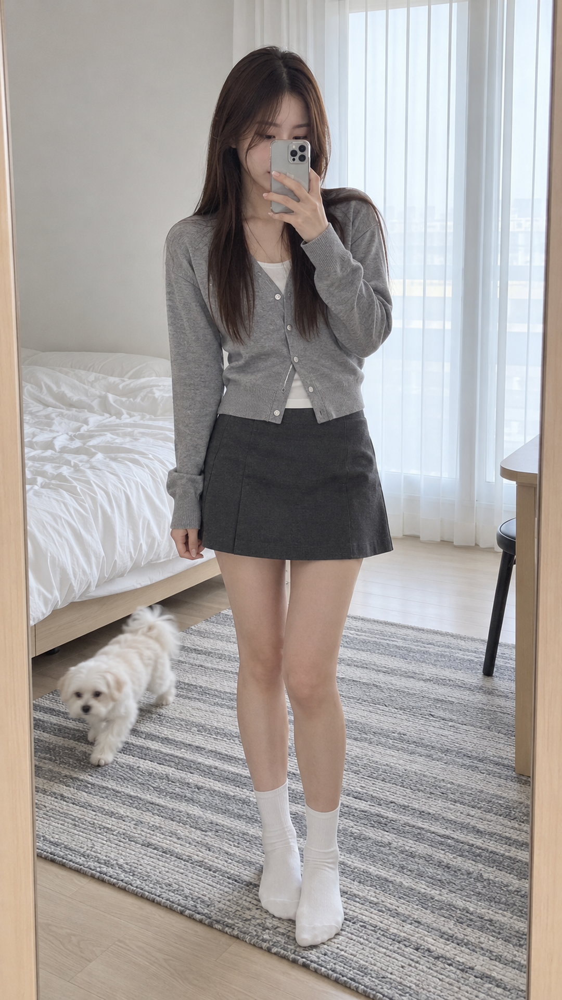
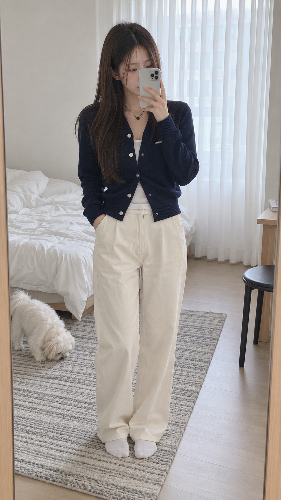
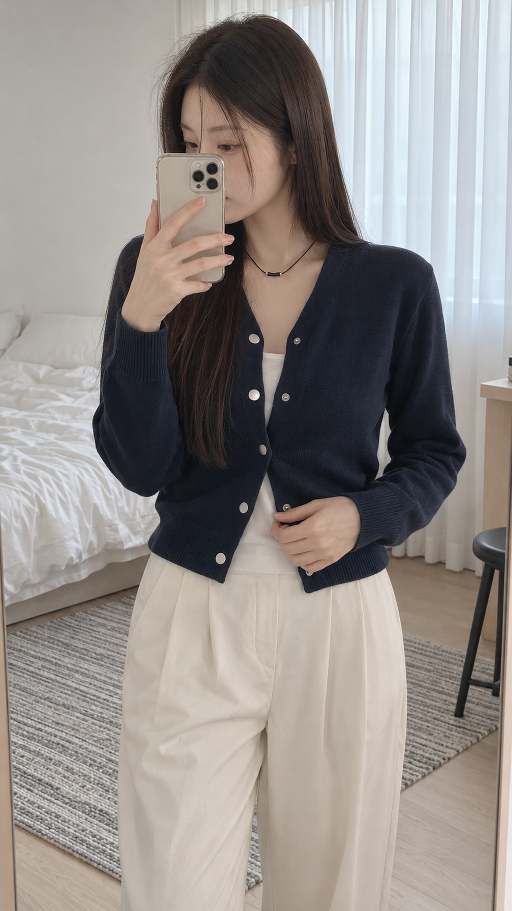

• Cut 1~5 (앞부분 룩북 영상): 자취방 침대/러그 고정 앵글 + 흰 양말 + 아이폰 얼굴 가림 거울셀카 + 소매·밑단 만지기 + 뒤쪽 침대 옆으로 하얀 말티즈 강아지가 걸어 다니는 생활감
• 엔딩 구간 (9초 완성됨 ✅): 영상이 아닌 키별 착샷 정지 이미지 3장(158cm → 163cm → 169cm)을 각 3초씩 보여주고 슬라이드 전환(smoothleft)
말씀하신 대로 마지막 키별 비교는 어색한 영상 대신 정지 착샷 이미지 3장을 각 3초씩 선명하게 보여주고 다음 이미지로 부드럽게 넘어가는 슬라이드 효과(smoothleft)로 완성해 두었습니다.




